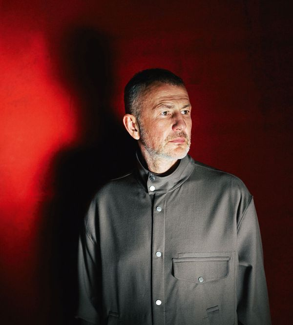

Jul 09, 2026 10:40 AM

WHEN ENOUGH Russians feel the endless fighting in Ukraine is futile and that they are paying the price, their president, Vladimir Putin, will be forced to do something spectacular to break the deadlock. This is why it pays to watch Russia for warnings of fatigue or discontent. Our cover this week features the most stunning such warning so far.
It comes from Andrey Melnichenko, the world’s fertiliser king and Russia’s biggest industrialist. Mr Melnichenko is hardly a member of the anti-Putin opposition. Far from criticising the invasion, he is an insider whose factories have supported the war economy. Nor is he being high-minded. Having run his companies outside Russia, Mr Melnichenko returned in 2023 as the scope for global business shrank. Like most oligarchs, he has lived by Mr Putin’s rules—make money, but keep your nose out of politics. He is talking now because he and his fellow tycoons can no longer afford to ignore the rot in a country they watched descend into tyranny.
Read the rest of our cover package
Mr Melnichenko issued his warning over nearly 60 hours of interviews with The Economist and more guardedly in an essay we are publishing online. It is the first time an oligarch in Russia has spoken out at such length. We are giving him space not because we agree with all his views or because he is a champion of democracy and human rights. Instead, he is a pragmatist who wants his firms to thrive. That is why his call could resonate in a country where wars gone wrong, including the defeat to Japan in 1905, have led to campaigns by industrialists for political change.
Mr Melnichenko’s words go far beyond the war, to the bleak outlook for Russia and its neighbours. He warns the West not to wish for Russia to descend into chaos, brutal autarky or a sullen, dangerous dependency. Although he does not say that Mr Putin must be removed from power, the change he wants would amount to an end to one-man rule.
What makes Mr Melnichenko’s intervention so striking is that the Ukraine war has come home to Russia. After Ukrainian attacks on its energy industry, the country is witnessing queues for fuel and fistfights at filling stations. The annexation of Crimea in 2014 boosted Mr Putin’s popularity; today the peninsula is being isolated by Ukrainian drone strikes. Forced military enlistment is feeding resentment. Influencers’ complaints about the war are going viral on social media.
This reality belies Mr Putin’s repeated promises that the special military operation is on track and a breakthrough is at hand. Although the Russian economy is not about to collapse and people are not about to rise up, Russians increasingly feel that their country has reached a dead end·.
Mr Putin may well try to reassert his authority by escalating the war and repressing people at home. Some Western intelligence services have recently reported that Russia is about to intensify its confrontation with NATO. At his darkest, Mr Melnichenko fears the use of a tactical nuclear weapon in an attempt to terrorise Ukraine’s European backers—though Western analysts still discount that.
Mr Melnichenko argues that escalation would not lead to a lasting peace between Russia, Ukraine and Europe. Left unsaid is that, if ordinary Russians become alarmed by the war and more resentful because of a broad mobilisation and political repression, that will only exacerbate Mr Putin’s problems at home—leading to the next round of escalation.
These gloomy thoughts take Mr Melnichenko to the heart of his argument. He sets out his thesis in a series of long-term scenarios for Russia, all of which, he says, would be dangerous for Russia and the world.
Most alarmingly, Russia could collapse into anarchy, as warlords struggle for control of resources and nuclear weapons. That fear was real enough to lead the Biden administration to seek to avoid Russia being humiliated in Ukraine.
Or Russia could come under the thumb of foreign powers. It may be dominated by China, which could use it to supply raw materials and serve as a buffer against America. Or, after a war of attrition, maybe Russia will exist on the periphery of Europe, an impoverished dependant. Both outcomes would breed resentment and discontent, he predicts, incubating a violent nationalism that may one day explode into conflict.
In the last scenario Russia would turn inward, like North Korea, a closed fortress under siege, starved of growth and capital. This is apparently being actively discussed in the bowels of the Kremlin. Yet, like North Korea, Russia would be in a state of permanent war against the world.
Mr Melnichenko is enigmatic about how precisely to avoid these outcomes. Self-servingly, he urges Western countries to resist the temptation to push the war to its limits. Instead, they and Russia must find a way to live in peace. To this end, he calls on them to grant Russia “sovereignty”—an immunity that sounds a lot like China’s demand for non-interference. About reform in Russia, he is elusive. The country must be predictable to the outside world and must win over its people without resorting to coercion. Implicitly, he wants Mr Putin to relinquish one-man rule and devolve power. But he does not talk about democracy.
Even that will run up against the securocrats, top dogs since Mr Putin banished the original post-Soviet oligarchs from politics over two decades ago. If Russia becomes a more normal country, they will be the losers. Perhaps, though, technocrats and moguls fearful for Russia will take Mr Melnichenko’s side. Mr Putin may refuse to yield. But he is in a bind. Grinding on, escalation and reform would each carry costs.
Reform has a precedent. In 1905 Russia lost a 19-month war to Japan. Industrialists and technocrats blamed the dictatorial Nicholas II. It showed, they said, that one-man rule doomed Russia to be behind the rest of Europe. That year, after an uprising, they forced the tsar to accept the October Manifesto, which proposed civil liberties and a legislative assembly.
By mid-1907 Nicholas had crushed the reforms; a decade later he was toppled in the revolution. The hope must be that Russia learns this lesson: it needs reforms that last. ■
Subscribers to The Economist can sign up to our Opinion newsletter, which brings together the best of our leaders, columns, guest essays and reader correspondence.